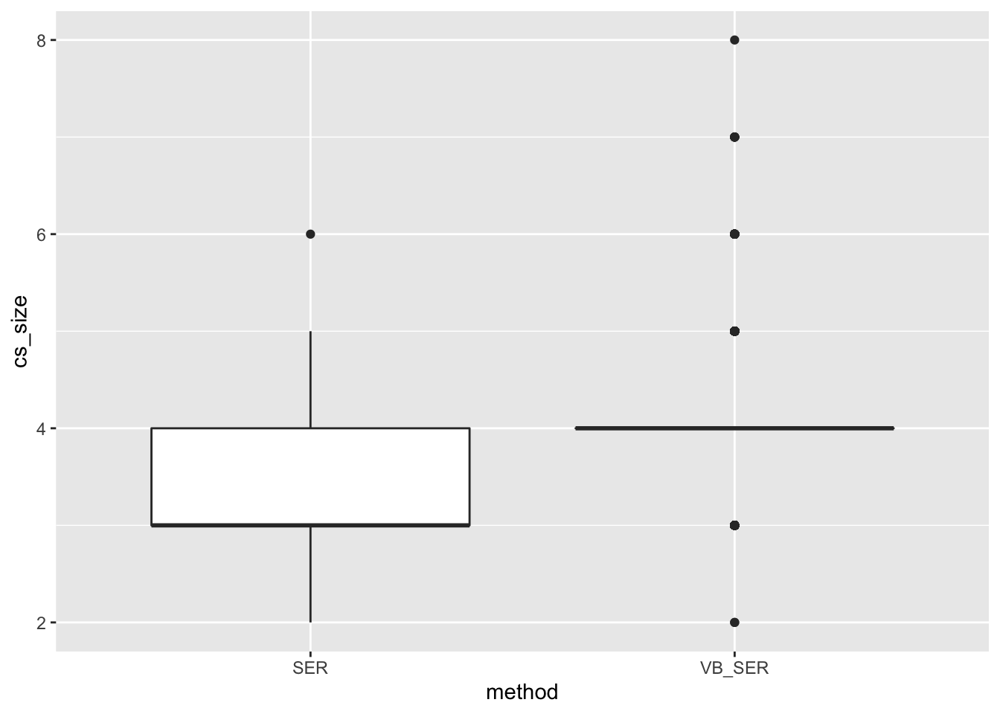
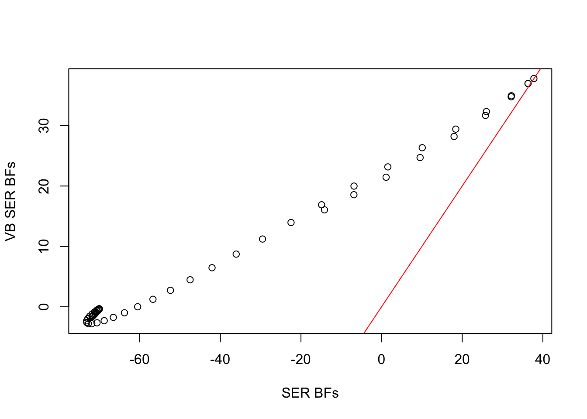
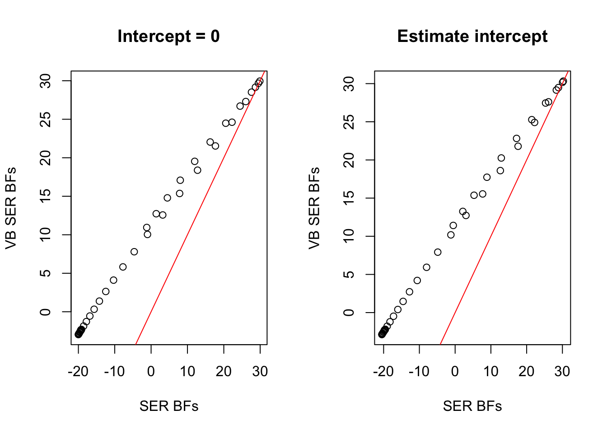
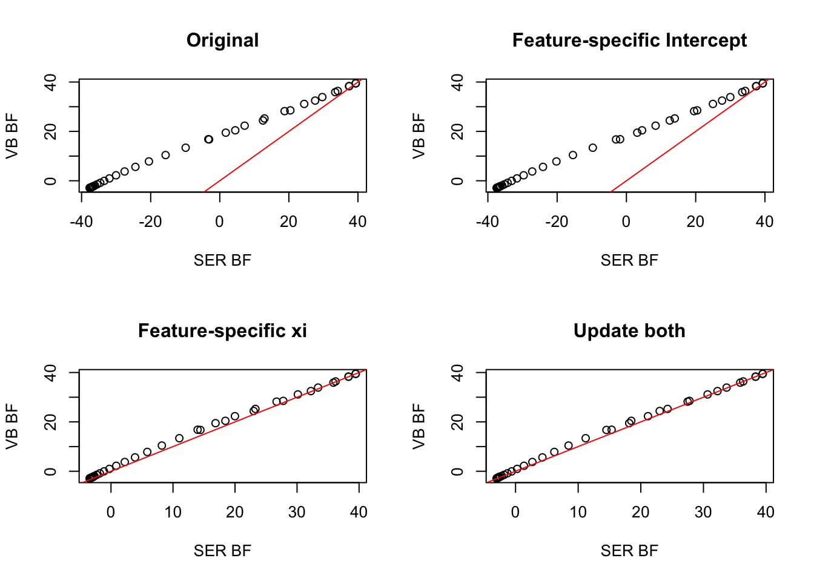

logistic_ser_undercovers
Karl Tayeb
2022-10-26
Last updated: 2022-10-31
Checks: 7 0
Knit directory: logistic-susie-gsea/
This reproducible R Markdown analysis was created with workflowr (version 1.7.0). The Checks tab describes the reproducibility checks that were applied when the results were created. The Past versions tab lists the development history.
Great! Since the R Markdown file has been committed to the Git repository, you know the exact version of the code that produced these results.
Great job! The global environment was empty. Objects defined in the global environment can affect the analysis in your R Markdown file in unknown ways. For reproduciblity it’s best to always run the code in an empty environment.
The command set.seed(20220105) was run prior to running
the code in the R Markdown file. Setting a seed ensures that any results
that rely on randomness, e.g. subsampling or permutations, are
reproducible.
Great job! Recording the operating system, R version, and package versions is critical for reproducibility.
Nice! There were no cached chunks for this analysis, so you can be confident that you successfully produced the results during this run.
Great job! Using relative paths to the files within your workflowr project makes it easier to run your code on other machines.
Great! You are using Git for version control. Tracking code development and connecting the code version to the results is critical for reproducibility.
The results in this page were generated with repository version 26bcf0f. See the Past versions tab to see a history of the changes made to the R Markdown and HTML files.
Note that you need to be careful to ensure that all relevant files for
the analysis have been committed to Git prior to generating the results
(you can use wflow_publish or
wflow_git_commit). workflowr only checks the R Markdown
file, but you know if there are other scripts or data files that it
depends on. Below is the status of the Git repository when the results
were generated:
Ignored files:
Ignored: .DS_Store
Ignored: .RData
Ignored: .Rhistory
Ignored: .Rproj.user/
Ignored: _targets.R
Ignored: _targets.html
Ignored: _targets.md
Ignored: _targets/objects/
Ignored: _targets/user/
Ignored: _targets/workspaces/
Ignored: _targets_r/
Ignored: analysis/figure/
Ignored: cache/
Ignored: data/.DS_Store
Ignored: data/adipose_2yr_topsnp.txt
Ignored: data/anthony/
Ignored: data/bohan_example/
Ignored: data/de-droplet/
Ignored: data/de-microplastics/
Ignored: data/deng/
Ignored: data/fetal_reference_cellid_gene_sets.RData
Ignored: data/human_chimp_eb/
Ignored: data/pbmc-purified/
Ignored: data/wenhe_baboon_diet/
Ignored: data/yusha_sc_tumor/
Ignored: library/
Ignored: renv/
Ignored: staging/
Untracked files:
Untracked: .ipynb_checkpoints/
Untracked: Master's Paper.pdf
Untracked: Project_1652928411/
Untracked: Project_1653228324/
Untracked: Project_1653228355/
Untracked: VEB_Boost_Proposal_Write_Up (1).pdf
Untracked: _targets/meta/
Untracked: additive.l5.gonr.aggregate.scores
Untracked: analysis/2022_09_22_pdac_example.Rmd
Untracked: analysis/alpha_ash_v_point_normal.Rmd
Untracked: analysis/bohan_troubleshoot.Rmd
Untracked: analysis/compare_w_post_hoc_clustering.Rmd
Untracked: analysis/compute_exact_BFs.Rmd
Untracked: analysis/de_droplet_noshrink.Rmd
Untracked: analysis/de_droplet_noshrink_logistic_susie.Rmd
Untracked: analysis/detection_problem.Rmd
Untracked: analysis/exact_logistic_ser.Rmd
Untracked: analysis/expected_condition_bfs.Rmd
Untracked: analysis/fetal_reference_cellid_gsea.Rmd
Untracked: analysis/fixed_intercept.Rmd
Untracked: analysis/forward_regression_initialization.Rmd
Untracked: analysis/gsea_made_simple.Rmd
Untracked: analysis/iDEA_examples.Rmd
Untracked: analysis/latent_gene_list.Rmd
Untracked: analysis/linear_method_failure_modes.Rmd
Untracked: analysis/linear_regression_failure_regime.Rmd
Untracked: analysis/linear_v_logistic_pbmc.Rmd
Untracked: analysis/logistic_susie_rss.Rmd
Untracked: analysis/logistic_susie_veb_boost_vs_vb.Rmd
Untracked: analysis/logistic_susie_vis.Rmd
Untracked: analysis/logistic_variational_bound.Rmd
Untracked: analysis/logsitic_susie_template.Rmd
Untracked: analysis/normal_means.Rmd
Untracked: analysis/pcb_scratch.Rmd
Untracked: analysis/references.bib
Untracked: analysis/roadmap.Rmd
Untracked: analysis/sc_tumor_followup.Rmd
Untracked: analysis/ser_detection_threshold.Rmd
Untracked: analysis/simulations.Rmd
Untracked: analysis/simulations_l1.Rmd
Untracked: analysis/tccm_vs_logistic_susie.Rmd
Untracked: analysis/template.Rmd
Untracked: analysis/test.Rmd
Untracked: analysis/univariate_laplace_approximation.Rmd
Untracked: analysis/vb_susie.Rmd
Untracked: analysis/z_score_vs_threshold.Rmd
Untracked: build_site.R
Untracked: code/binromial_ser.R
Untracked: code/html_tables.R
Untracked: code/latent_logistic_susie.R
Untracked: code/logistic_susie_data_driver.R
Untracked: code/marginal_sumstat_gsea_collapsed.R
Untracked: code/point_normal.R
Untracked: code/sumstat_gsea.py
Untracked: code/susie_gsea_queries.R
Untracked: docs.zip
Untracked: export/
Untracked: figure/
Untracked: l1.sim.aggregate.scores
Untracked: logistic_regression.stan
Untracked: pbmc_cd19_symbol.txt
Untracked: pbmc_cd19b_0.1_background.csv
Untracked: pbmc_cd19b_0.1_david_annotation_clusters.txt
Untracked: pbmc_cd19b_0.1_david_results.txt
Untracked: pbmc_cd19b_0.1_list.csv
Untracked: presentations/
Untracked: references.bib
Unstaged changes:
Modified: analysis/approximate_bayes_factors.Rmd
Modified: analysis/example_pbmc.Rmd
Note that any generated files, e.g. HTML, png, CSS, etc., are not included in this status report because it is ok for generated content to have uncommitted changes.
These are the previous versions of the repository in which changes were
made to the R Markdown
(analysis/logistic_ser_undercovers.Rmd) and HTML
(docs/logistic_ser_undercovers.html) files. If you’ve
configured a remote Git repository (see ?wflow_git_remote),
click on the hyperlinks in the table below to view the files as they
were in that past version.
| File | Version | Author | Date | Message |
|---|---|---|---|---|
| Rmd | 26bcf0f | Karl Tayeb | 2022-10-31 | wflow_publish("analysis/logistic_ser_undercovers.Rmd") |
Introduction
\[ \usepackage{bm} \newcommand{\bomega}{\mathbf\omega} \]
Recall that in the single effect regression (SER), the posterior inclusion probabilities are just normalized Bayes Factors (BFs).
A critical difference between the logistic SER and the linear SER is that the linear SER can be solved exactly– conditioning on which variable is selected reduces to a univariate linear regression with a normal prior on the effect.
In contrast, in the logistic SER we are left with a univariate logistic regression with a normal prior on the effect. We perform variational inference on the Polya-Gamma augmented model using the family of approximate posteriors \(q(\bomega, b, \phi) = \prod_i q(\omega_i) q(b | \phi)q(\phi)\). Where \(b\) is the effect size of the non-zero effect, \(\phi\) is the variable that is selected and \(\bomega\) are the collection Polya-Gamma random variables (one for each observation). The PG augmentation is helpful because it gives us conditional conjugacy– and therefor a fast CAVI with closed form updates.
This variational approximation we use is equivalent to the Jaakola-Jordan variational bound, which replaces the log-sigmoid function with a quadratic lower bound. The variational parameter for each \(q(\omega_i)\) corresponds to the point in log-odds space that this lower bound is made tight. Here lies the problem: the bound cannot be tight for all features simultaneously. This is a problem for the SER where we are concerned explicitly about the evidence for competing single-effect models.
It is not hard to predict that, barring getting stuck in local optima: 1. the logistic SER will produce smaller credible sets than it should 2. the resulting credible sets will be sensitive to the choice of PG variational parameters
Logistic SER under-covers
We generate a simple simulation with a single effect. For each simulation we fir the logistic SER compute \(90\%\) credible sets and check if the correct variable is included in the credible set. Repeating the simulation 1000 times we show that indeed the logistic SER undercovers. We also perform “VB-SER” which performs univariate Bayesian logistic regression for each feature seperately. This gives a good approximation to the exact BFs which can be used to compute PIPs and credible sets. We see that in contrast to the logistic SER, VB-SER achieved target coverage. We also see that the CSs are larger for VB-SER than the logistic SER.
library(tidyverse)── Attaching packages ─────────────────────────────────────── tidyverse 1.3.1 ──✔ ggplot2 3.3.6 ✔ purrr 0.3.4
✔ tibble 3.1.8 ✔ dplyr 1.0.10
✔ tidyr 1.2.1 ✔ stringr 1.4.0
✔ readr 2.1.2 ✔ forcats 0.5.2 ── Conflicts ────────────────────────────────────────── tidyverse_conflicts() ──
✖ dplyr::filter() masks stats::filter()
✖ dplyr::lag() masks stats::lag()library(tictoc)
devtools::load_all('~/R/logisticsusie/')ℹ Loading logisticsusieset.seed(11)
compute_ser_conditional_evidence <- function(ser, l=1){
p <- dim(ser$data$X)[2]
elbo <- with(ser, purrr::map_dbl(1:p, ~compute_elbo2(
x=data$X[, .x],
y=data$y, o=0,
mu=params$mu[l, .x],
tau=1/params$var[l, .x],
xi=params$xi[,1],
delta=params$delta[1,1],
tau0=1/hypers$prior_variance
)))
null_model_elbo <- tail(fit_univariate_vb(ser$data$X[, 1], ser$data$y, tau0=1e10)$elbos, 1)
return(elbo - null_model_elbo)
}undercoverage_sim <- function(){
sim <- logisticsusie:::sim_ser(n=100, fsimX_control = list(length_scale=100), idx = 10)
ser <- with(sim, binsusie(X, y, L=1, center = F, scale=F, estimate_prior_variance = F, prior_variance = 1))
ser$BF <-compute_ser_conditional_evidence(ser)
ser_cs <- get_cs(ser$pip, requested_coverage = 0.9)
vb_ser <- with(sim, fit_vb_ser(X, y, prior_variance = 1))
vb_ser$BF
vb_cs <- get_cs(vb_ser$PIP, requested_coverage = 0.9)
res <- tribble(
~'method', ~'covered', ~'cs_size', ~'pips', ~'bfs',
'VB_SER', (10 %in% vb_cs$cs), vb_cs$size, vb_ser$PIP, vb_ser$BF,
'SER', (10 %in% ser_cs$cs), ser_cs$size, ser$pip, ser$BF,
)
print(res$covered)
return(res)
}
tic()
res <- xfun::cache_rds({
replicate(1000, undercoverage_sim(), simplify = FALSE)},
dir = 'cache/undercoverage/', file='undercoverage1.rds'
) %>% bind_rows()
toc()0.04 sec elapsedres %>% group_by(method) %>% summarise(coverage=mean(covered))# A tibble: 2 × 2
method coverage
<chr> <dbl>
1 SER 0.855
2 VB_SER 0.934res %>% ggplot(aes(x=method, y=cs_size)) + geom_boxplot()
Here is a typical example. The log Bayes factors of the logistic SER take on large negative values because for these features we have poor settings for the PG variational parameters and/or poor choice of intercept. Consequently the “rich get richer”. The variational parameters and intercept are influenced mostly by the features with the strongest evidence.
par(mfrow=c(1,1))
example <- undercoverage_sim()[1] TRUE TRUEplot(
example$bfs[[2]],
example$bfs[[1]],
ylab='VB SER BFs',
xlab='SER BFs',
);
abline(0, 1, col='red')
Untangling contributions of PG variational parameters, intercept, etc.
Both the intercept/fixed effect parameters and the PG variational parameter need to be shared across all the features. It would be good to understand how big an impact each of these has.
One option to alleviate the issue of the intercept is to estimate the intercept conditional on which variable is selected (as Andrew does in VEB.boost).
Simulation with \(b_0 = 0\) (fixed intercept)
The logistic SER will undercover even when the intercept is 0, and we fit the model under such assumptions.
par(mfrow=c(1,2))
sim <- logisticsusie:::sim_ser(beta0 = 0, n=100, fsimX_control = list(length_scale=100), idx = 10)
# NO INTERCEPT--------
ser <- with(sim, binsusie(X, y, L=1, center = F, scale=F, intercept = F, estimate_prior_variance = F, prior_variance = 1))
ser$BF <-compute_ser_conditional_evidence(ser)
ser_cs <- get_cs(ser$pip, requested_coverage = 0.9)
vb_ser <- with(sim, fit_vb_ser(X, y, prior_variance = 1, intercept.init = 0, estimate_intercept = F))
vb_ser$BF [1] 10.9444080 12.7332428 14.7908461 17.0826786 19.5353582 22.0453017
[7] 24.4870559 26.7094749 28.5181745 29.6779411 29.9496730 29.1646351
[13] 27.3014991 24.6166839 21.5325818 18.3844127 15.3641399 12.5700207
[19] 10.0437549 7.7964435 5.8225599 4.1086091 2.6358179 1.3825358
[25] 0.3260524 -0.5548071 -1.2780196 -1.8577530 -2.3048074 -2.6280698
[31] -2.8364930 -2.9411571 -2.9568767 -2.9028534 -2.8019606 -2.6785634
[37] -2.5553063 -2.4498798 -2.3729287 -2.3277803 -2.3117844 -2.3184733
[43] -2.3397152 -2.3673573 -2.3942203 -2.4145345 -2.4239938 -2.4195918
[49] -2.3993754 -2.3621818vb_cs <- get_cs(vb_ser$PIP, requested_coverage = 0.9)
plot(
ser$BF,
vb_ser$BF,
ylab='VB SER BFs',
xlab='SER BFs',
main='Intercept = 0'
);
abline(0, 1, col='red')
# Estimate intercept--------
ser <- with(sim, binsusie(X, y, L=1, center = F, scale=F, estimate_prior_variance = F, prior_variance = 1))
ser$BF <-compute_ser_conditional_evidence(ser)
ser_cs <- get_cs(ser$pip, requested_coverage = 0.9)
vb_ser <- with(sim, fit_vb_ser(X, y, prior_variance = 1))
vb_ser$BF [1] 11.4192353 13.2575150 15.3755307 17.7358381 20.2571016 22.8194035
[7] 25.2763811 27.4560258 29.1583326 30.1733139 30.3243201 29.4807507
[13] 27.6102311 24.9148633 21.7936146 18.6025041 15.5478048 12.7287419
[19] 10.1835182 7.9206494 5.9334810 4.2083697 2.7265038 1.4661471
[25] 0.4043098 -0.4804483 -1.2062915 -1.7874815 -2.2348036 -2.5570711
[31] -2.7631573 -2.8641097 -2.8748220 -2.8147360 -2.7071562 -2.5770500
[37] -2.4477461 -2.3375604 -2.2575678 -2.2112475 -2.1958273 -2.2045173
[43] -2.2287658 -2.2599969 -2.2906681 -2.3147359 -2.3277107 -2.3264827
[49] -2.3090533 -2.2742524vb_cs <- get_cs(vb_ser$PIP, requested_coverage = 0.9)
plot(
ser$BF,
vb_ser$BF,
ylab='VB SER BFs',
xlab='SER BFs',
main='Estimate intercept'
);
abline(0, 1, col='red')
Re-estimatintg \(\xi\) and intercept
After fitting the SER we can compute the feature-level BFs at the optimal setting of the intercept, and the optimal setting of \(q(\omega)\) for that feature. We see that the discrepancy between uni-variate VB Bayes factors and the SER BFs is resolved almost entirely with one update of \(q(\omega)\).
This tells us that (1) we must be doing a good enough job of estimating the conditional effects (at least as far as computing BFs/PIPs is concerned) and (2) the effect of the shared intercept parameter is negligible in comparison to the shared PG bound.
sim <- logisticsusie:::sim_ser(beta0 = 0, n=100, fsimX_control = list(length_scale=100), idx = 10)
# original ser
ser <- with(sim, binsusie(X, y, L=1, center = F, scale=F, estimate_prior_variance = F, prior_variance = 1))
ser$BF <-compute_ser_conditional_evidence(ser)
ser_cs <- get_cs(ser$pip, requested_coverage = 0.9)
# univariate vb
vb_ser <- with(sim, fit_vb_ser(X, y, prior_variance = 1))
vb_ser$BF [1] 16.82569543 19.48287198 22.31473230 25.24902065 28.21070603 31.12445566
[7] 33.90009309 36.38449545 38.33177001 39.44743340 39.49503920 38.31795965
[13] 35.89627294 32.47953132 28.51423178 24.41187067 20.43693123 16.73617313
[19] 13.38458919 10.41473748 7.83060378 5.61917977 3.75696506 2.21458068
[25] 0.95892362 -0.04495941 -0.83248069 -1.43815973 -1.89422779 -2.22969221
[31] -2.46989252 -2.63652157 -2.74790067 -2.81928468 -2.86303360 -2.88863038
[37] -2.90264857 -2.90884618 -2.90852352 -2.90115590 -2.88518043 -2.85875346
[43] -2.82032637 -2.76896168 -2.70440682 -2.62698638 -2.53739807 -2.43648755
[49] -2.32505626 -2.20373094vb_cs <- get_cs(vb_ser$PIP, requested_coverage = 0.9)
# recompute BFs with optimized intercept
p <- dim(ser$data$X)[2]
tau = 1/drop(ser$mu2 - ser$mu^2)
tau0 = 1/ser$hypers$prior_variance
new_intercept <- with(sim, map_dbl(1:p, ~update_intercept(
X[, .x], y, o=0, mu = ser$mu[.x], tau = tau[.x], xi=ser$params$xi, delta = 0, tau0 = tau0)))
null_model_elbo <- tail(fit_univariate_vb(
ser$data$X[, 1], ser$data$y, tau0=1e10)$elbos, 1)
bf_ser <- with(ser, purrr::map_dbl(1:p, ~compute_elbo2(
x=data$X[, .x],
y=data$y, o=0,
mu=params$mu[1, .x],
tau=tau[.x],
xi=params$xi[,1],
delta=params$delta[1,1],
tau0=tau0
))) - null_model_elbo
bf_delta <- with(ser, purrr::map_dbl(1:p, ~compute_elbo2(
x=data$X[, .x],
y=data$y, o=0,
mu=params$mu[1, .x],
tau=tau[.x],
xi=params$xi[,1],
delta=new_intercept[.x],
tau0=tau0
))) - null_model_elbo
bf_xi <- with(ser, purrr::map_dbl(1:p, ~compute_elbo3(
x=data$X[, .x],
y=data$y, o=0,
mu=params$mu[1, .x],
tau=tau[.x],
xi=params$xi[,1],
delta=params$delta[1,1],
tau0=tau0
))) - null_model_elbo
bf_delta_xi <- with(ser, purrr::map_dbl(1:p, ~compute_elbo3(
x=data$X[, .x],
y=data$y, o=0,
mu=params$mu[1, .x],
tau=tau[.x],
xi=params$xi[,1],
delta=new_intercept[.x],
tau0=tau0
))) - null_model_elbo
par(mfrow=c(2,2))
plot(
bf_ser, vb_ser$BF,
xlab = 'SER BF',
ylab = 'VB BF',
main='Original'
)
abline(0, 1, col='red')
plot(
bf_delta, vb_ser$BF,
xlab = 'SER BF',
ylab = 'VB BF',
main='Feature-specific Intercept'
)
abline(0, 1, col='red')
plot(
bf_xi, vb_ser$BF,
xlab = 'SER BF',
ylab = 'VB BF',
main='Feature-specific xi'
)
abline(0, 1, col='red')
plot(
bf_delta_xi, vb_ser$BF,
xlab = 'SER BF',
ylab = 'VB BF',
main='Update both'
)
abline(0, 1, col='red')
Comparison to VEB.Boost
VEB.Boost estimates the intercepts separately for each feature which should help. Here we take the
par(mfrow=c(1,2))
sim <- logisticsusie:::sim_ser(beta0 = -2, n=100, fsimX_control = list(length_scale=100), idx = 10)
# NO INTERCEPT--------
ser <- with(sim, binsusie(X, y, L=1, center = F, scale=F, intercept = F, estimate_prior_variance = F, prior_variance = 1))
ser$BF <-compute_ser_conditional_evidence(ser)
ser_cs <- get_cs(ser$pip, requested_coverage = 0.9)
vb_ser <- with(sim, fit_vb_ser(X, y, prior_variance = 1, intercept.init = 0, estimate_intercept = F))
vb_ser$BF [1] 5.736603 7.272084 8.949158 10.739619 12.586497 14.394193 16.022530
[8] 17.290304 18.004057 18.008222 17.248651 15.796185 13.810822 11.468288
[15] 8.915097 6.267916 3.633348 1.118836 -1.174619 -3.176837 -4.857621
[22] -6.219017 -7.282060 -8.077576 -8.641524 -9.013178 -9.233979 -9.345549
[29] -9.386607 -9.389583 -9.378187 -9.366858 -9.362119 -9.365030 -9.373742
[36] -9.385437 -9.397470 -9.407780 -9.414861 -9.417535 -9.414732 -9.405369
[43] -9.388352 -9.362643 -9.327336 -9.281696 -9.225156 -9.157279 -9.077707
[50] -8.986118vb_cs <- get_cs(vb_ser$PIP, requested_coverage = 0.9)
# Estimate intercept--------
ser <- with(sim, binsusie(X, y, L=1, center = F, scale=F, estimate_prior_variance = F, prior_variance = 1))
ser$BF <-compute_ser_conditional_evidence(ser)
ser_cs <- get_cs(ser$pip, requested_coverage = 0.9)
vb_ser <- with(sim, fit_vb_ser(X, y, prior_variance = 1))
vb_ser$BF [1] 1.688448e+01 1.902816e+01 2.136731e+01 2.386434e+01 2.645561e+01
[6] 2.904663e+01 3.150917e+01 3.366952e+01 3.527284e+01 3.594359e+01
[11] 3.527717e+01 3.313363e+01 2.983440e+01 2.593057e+01 2.184458e+01
[16] 1.786378e+01 1.416115e+01 1.080776e+01 7.833942e+00 5.265171e+00
[21] 3.114475e+00 1.369701e+00 -4.649337e-05 -1.034648e+00 -1.776850e+00
[26] -2.271225e+00 -2.564181e+00 -2.703503e+00 -2.735523e+00 -2.701304e+00
[31] -2.633286e+00 -2.553909e+00 -2.476363e+00 -2.406950e+00 -2.347467e+00
[36] -2.297520e+00 -2.255991e+00 -2.221828e+00 -2.194264e+00 -2.172689e+00
[41] -2.156383e+00 -2.144281e+00 -2.134866e+00 -2.126214e+00 -2.116130e+00
[46] -2.102321e+00 -2.082552e+00 -2.054756e+00 -2.017099e+00 -1.968002e+00vb_cs <- get_cs(vb_ser$PIP, requested_coverage = 0.9)
# VEB Boost-----------
veb_ser <- with(sim, gseasusie::fit_logistic_susie_veb_boost(X, y, L=1))fitting logistic susie (via VEB.Boost)ELBO: -30.113
0.52 sec elapsedveb_ser$intercept[1] -2.278102# recompute the intercepts
veb.fit <- veb_ser$veb.fit
alpha <- drop(t(do.call(cbind, lapply(
veb.fit$leaves, function(x) x$learner$currentFit$alpha))))
mu <- drop(t(do.call(cbind, lapply(
veb.fit$leaves, function(x) x$learner$currentFit$mu))))
var_post <- drop(t(do.call(cbind, lapply(
veb.fit$leaves, function(x) x$learner$currentFit$sigma2_post))))
xi <- veb.fit$xi[,1]
tau0 <- 1/veb.fit$leaves[[1]]$learner$currentFit$V
delta <- map_dbl(1:50, with(sim, ~update_intercept(
X[, .x], y, o=0, mu=mu[.x], tau=1/var_post[.x], xi = xi, delta = 0, tau0=tau0)))
elbo <- map_dbl(1:50, with(sim, ~compute_elbo2(
X[, .x], y, o=0, mu=mu[.x], tau=1/var_post[.x], xi = xi, delta = delta[.x], tau0=tau0
)))
null_model_elbo <- with(sim, tail(fit_univariate_vb(X[, 1], y, tau0=1e10)$elbos, 1))
veb_bfs <- elbo - null_model_elbo
plot(veb_bfs, ser$BF, xlab = 'VEB.Boost BFs', ylab = 'SER BFs')
abline(0, 1, col='red')
plot(veb_bfs, vb_ser$BF, xlab = 'VEB.Boost BFs', ylab = 'VB SER BFs')
abline(0, 1, col='red')
VEB.Boost, despite handling the intercept more flexibly, does not change the PIPs/BFs too dramatically.
sessionInfo()R version 4.1.2 (2021-11-01)
Platform: x86_64-apple-darwin17.0 (64-bit)
Running under: macOS Big Sur 10.16
Matrix products: default
BLAS: /Library/Frameworks/R.framework/Versions/4.1/Resources/lib/libRblas.0.dylib
LAPACK: /Library/Frameworks/R.framework/Versions/4.1/Resources/lib/libRlapack.dylib
locale:
[1] en_US.UTF-8/en_US.UTF-8/en_US.UTF-8/C/en_US.UTF-8/en_US.UTF-8
attached base packages:
[1] stats graphics grDevices utils datasets methods base
other attached packages:
[1] logisticsusie_0.0.0.9001 testthat_3.1.4 tictoc_1.0.1
[4] forcats_0.5.2 stringr_1.4.0 dplyr_1.0.10
[7] purrr_0.3.4 readr_2.1.2 tidyr_1.2.1
[10] tibble_3.1.8 ggplot2_3.3.6 tidyverse_1.3.1
loaded via a namespace (and not attached):
[1] colorspace_2.0-3 ellipsis_0.3.2 rprojroot_2.0.3
[4] fs_1.5.2 rstudioapi_0.13 farver_2.1.1
[7] remotes_2.4.2 mvtnorm_1.1-3 fansi_1.0.3
[10] lubridate_1.8.0 xml2_1.3.3 cachem_1.0.6
[13] knitr_1.40 pkgload_1.3.0 jsonlite_1.8.2
[16] workflowr_1.7.0 broom_1.0.1 dbplyr_2.2.1
[19] shiny_1.7.1 data.tree_1.0.0 compiler_4.1.2
[22] httr_1.4.4 backports_1.4.1 assertthat_0.2.1
[25] RcppZiggurat_0.1.6 Matrix_1.5-1 fastmap_1.1.0
[28] cli_3.4.1 later_1.3.0 htmltools_0.5.3
[31] prettyunits_1.1.1 tools_4.1.2 gtable_0.3.1
[34] glue_1.6.2 Rcpp_1.0.9 mr.ash.alpha_0.1-42
[37] cellranger_1.1.0 jquerylib_0.1.4 vctrs_0.4.1
[40] xfun_0.31 ps_1.7.0 brio_1.1.3
[43] rvest_1.0.2 mime_0.12 miniUI_0.1.1.1
[46] lifecycle_1.0.3 irlba_2.3.5.1 devtools_2.4.5
[49] scales_1.2.1 spatstat.utils_2.3-1 hms_1.1.2
[52] promises_1.2.0.1 parallel_4.1.2 gseasusie_0.0.0.9000
[55] emulator_1.2-21 susieR_0.12.27 yaml_2.3.5
[58] memoise_2.0.1 sass_0.4.1 reshape_0.8.9
[61] stringi_1.7.8 highr_0.9 desc_1.4.2
[64] pkgbuild_1.3.1 VEB.Boost_0.0.0.9038 rlang_1.0.6
[67] pkgconfig_2.0.3 matrixStats_0.62.0 evaluate_0.17
[70] lattice_0.20-45 htmlwidgets_1.5.4 labeling_0.4.2
[73] Rfast_2.0.6 processx_3.7.0 tidyselect_1.1.2
[76] plyr_1.8.7 magrittr_2.0.3 R6_2.5.1
[79] generics_0.1.3 profvis_0.3.7 DBI_1.1.3
[82] pillar_1.8.1 haven_2.5.1 whisker_0.4
[85] withr_2.5.0 mixsqp_0.3-43 modelr_0.1.9
[88] crayon_1.5.2 utf8_1.2.2 tzdb_0.3.0
[91] rmarkdown_2.14 urlchecker_1.0.1 usethis_2.1.6
[94] grid_4.1.2 readxl_1.4.0 callr_3.7.2
[97] git2r_0.30.1 reprex_2.0.1 digest_0.6.30
[100] xtable_1.8-4 httpuv_1.6.6 munsell_0.5.0
[103] bslib_0.4.0 sessioninfo_1.2.2